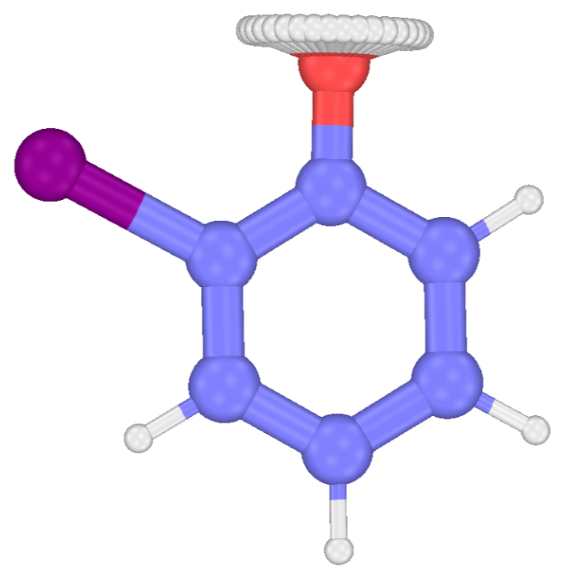
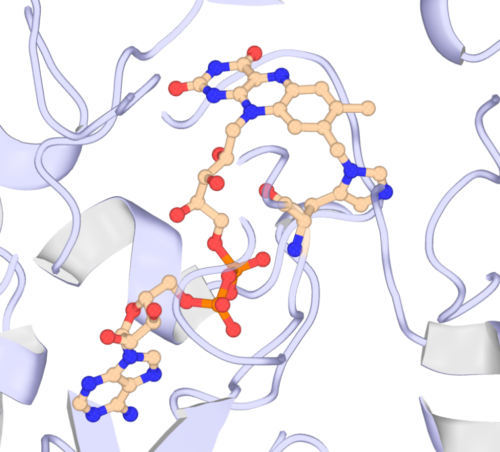
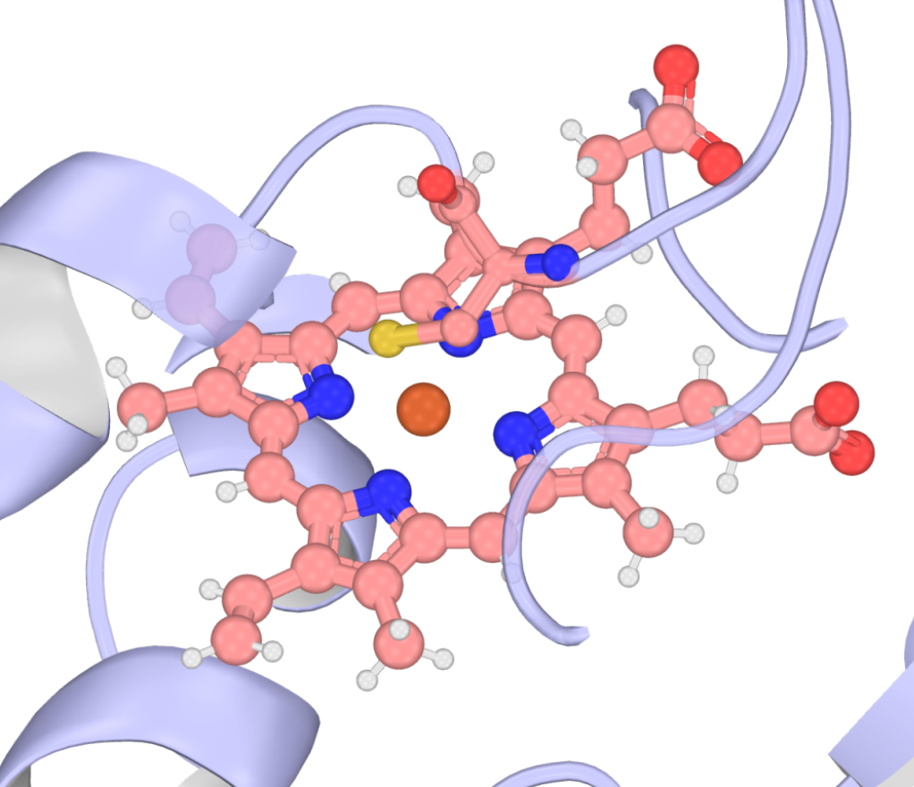

ParmFit Tutorials
Get to know ParmFit’s parameterization workflow by solving a few simple examples.
Before you start: install AmberTools and Gaussian 16
Every case needs AmberTools. Every NCAA and MetalAA case, and Refinement Cases 2 and 3, also need Gaussian 16 for their RESP charges — the Refinement cases also for their QM reference; only Refinement Case 1 runs without it. MAPLE looks for Gaussian only when a run reaches its first Gaussian job, so a missing g16 stops the run partway through. Each tutorial lists its requirements and a one-line check at the top.
The Systems
Refinement

o-Iodophenol
A phenol with an iodine beside its hydroxyl.
Start the tutorial →
NCAA

FAD in 6JQH
A histidine residue carrying a covalent FAD cofactor.
Start the tutorial →
MetalAA

HEME in 4ZF6
A cysteine-ligated heme iron site.
Start the tutorial →Before You Start
- Requirements. Software and input needs are summarized in the ParmFit hub’s Requirements section.
- Model. Every run in these tutorials uses the same checkpoint — UMA-S-1.1, selected with
#model=uma(size=uma-s-1p1)(the Refinement launchers addtask=omol). - Hardware. Every excerpt and timing in these tutorials comes from runs on an RTX 3060 Laptop GPU and an 8-core AMD CPU — sufficient for every run shown here. Every Gaussian job used the defaults
qm_nproc=8andqm_mem=24(GB); set lower values in the sidecar config on a smaller machine (see General Settings). - Example files. Right after its Overview, each tutorial links every input and output file where it is used, followed by its complete Zenodo run archive.